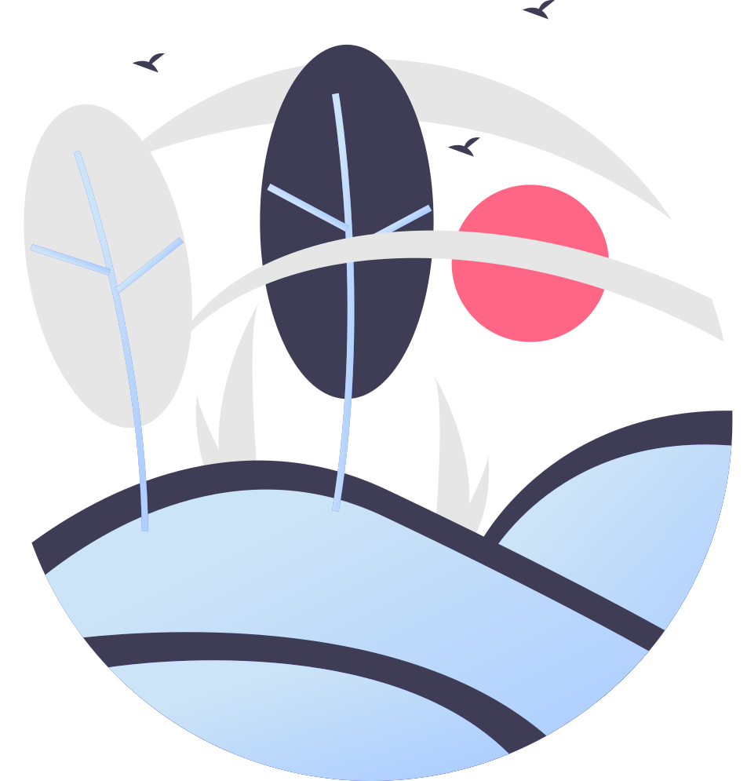

О медитации
С самого рождения мы учимся направлять
внимание во внешний мир. Познаем
и изучаем то, что находится
вокруг нас. И хорошо в этом
преуспеваем.
Но в какой-то момент этого
становится недостаточно. И тогда
появляется интерес к тому, чтобы
развернуть внимание вовнутрь и изучить
свой внутренний мир
так же основательно, как
до этого внешний.
У нас есть два варианта прожить жизнь:
присутствовать или отсутствовать.
Мы отсутствуем, когда находимся
в мыслях о прошлом или
в мечтах о будущем, то есть
фактически все время.
Или же мы можем
присутствовать, то есть пребывать
в настоящем моменте. Медитация —
это путь от отсутствия
к присутствию.
Мы учимся сохранять энергию
и налаживать циркуляцию жизни, которая
всегда была в нас и вокруг,
но была перекрыта в силу разных
обстоятельств. Постепенно нарушенные
в нас механизмы приходят
в порядок — и циркуляция
жизни становится
такой же естественной
и не требующей контроля, как
циркуляция крови или дыхание.

Обо мне
Зачастую практика начинается с того, что
мы чувствуем дискомфорт внутри.
Он очень явно проявляется при внешнем
комфорте. Так и у меня это проявилось
в начале 2013 года.
В какой-то момент я осознал, что
живу не свою жизнь. Делаю то, что мне
совсем не интересно, нахожусь
с людьми, с которыми неинтересно быть
рядом. И, как следствие, это порождало
постоянные напряжения, которые
я не замечал, но которые начали
физически и психически себя проявлять.
Стало понятно, что в данной ситуации мне
было необходимо разобраться в себе. Без
религиозности, верований, психологических
теорий, а просто рассмотреть все
происходящие во мне процессы по факту.
И в это время я знакомлюсь
с методом реализованного Мастера,
а чуть позже и самим Мастером. Это
было очень вовремя. Годы ежедневной практики это
подтвердили.
О занятиях
Зачем нужны занятия?
Занятия необходимы для того, чтобы в них
пропала надобность. Обычно это происходит через
два три года. Если человек регулярно практикует,
то за это время вырабатывается
привычка, появляется некоторая укорененность
в том, чтобы вспоминать себя без чьих-либо
напоминаний. Не 15 минут в день,
а постоянно — при своей повседневной
деятельности. С одной стороны, нам никто
не нужен для практики. С другой, если
мы верно оцениваем свои силы,
то понимаем, что изначально в нас
и вокруг нас больше бессознательного, чем
сознательного. И энергия группы дает
хорошую опору на время, пока
мы не станем более чистыми
и осознанными.
Если взять для примера любую деятельность
в нашей жизни — учебу, работу,
отношения, — то везде требуется время,
чтобы достичь определенного успешного
результата. Но когда речь заходит
о самом важном вопросе для каждого
из нас: как стать хозяином своей жизни,
разобраться в собственном устройстве,
зачастую можно встретить убеждение, что данный
вопрос можно решить по-быстрому, за пару
дней или недель.
Внутренняя работа не терпит спешки.
У каждого человека своя скорость раскрытия,
и она набирает свою максимальную
интенсивность по мере нашей укорененности в
практике.
Занятия проходят онлайн и офлайн. Методы,
предложенные для практики, были переданы
реализованным Мастером, у которого
я обучаюсь последние 7 лет. Они
максимально адаптированы для людей, живущих
обычной жизнью. Моя задача — без искажений
передать их вам.
Кто такой Мастер? Мастер — это хороший
специалист в каком либо деле. В данном
случае — в познании и раскрытии
своего потенциала.